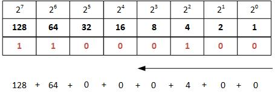

Number Bases
There are different types of ways to show a single value, these are known as number bases. There are 3 types of number bases that are covered in the spec as well as an extra onemptied
- Denary (0 - 9)
- Binary (1 and 0)
- Hexadecimal or HEX (0 - 9 the A for 10, B for 11 and so on up to F which is 15)
There is an extra type of number base which is not mentioned in the spec known as OCT (0 - 8) but we willl not talk about it here.
Data converstion
Since there are different ways to display a single value there must also be ways to convert the value between the differnt number bases. All number bases can be converted to each other with a few simple steps. However, as the number values become larger it becomes more and more complecated to convert and therefore: in exams you will not have to generally convert number larger than 8 bits
Binary to Denary Coverstion
A binary number can be converted to denary (and vice versa) using the grid below, which goes up to 8 bits (255).

The process is fairly simple. You go from the largest available number in the grid, and total the numbers as you go along for each 1 present in the grid. Please bear in mind the kind of binary number it is If it is unsigned take the end result to always be positive. Otherwise a 1 at the start of the number is a signature for the number being negative, and a 0 for it being positive.
Denary to Binary
The above process can simply be reversed in order to get the binary equivalent of a denary value:
- Go from left to right subtracting the largest possible number from the number you are converting in relation to the grid
- Place a 1 for every part of the grid where you have subtracted the corresponding number
- Total the numbers to make sure you havent made any mistakes
Binary to Hexadecimal
The same grid can be used to convert Binary to Hexadecimal as Binary to denary. Except the process is slighly different.
- Place the 1s and 0s in the grid as you normally would (left to right).
- Split the grid in half each half being 4 bits (15, 1 - 8).
- Add up the Numbers as you were converting it to denary and then convert the denary value to the corresponding HEX